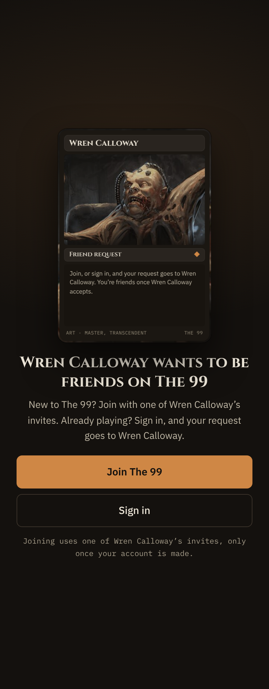
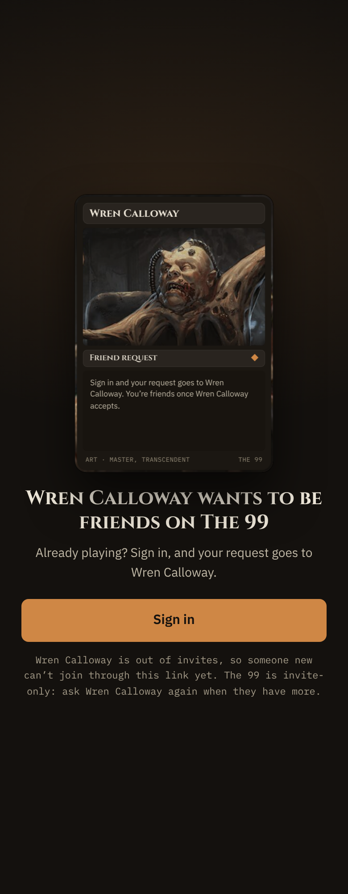
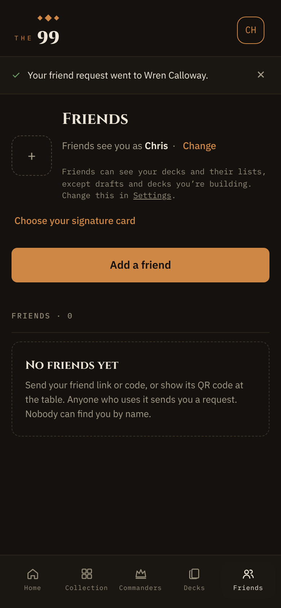
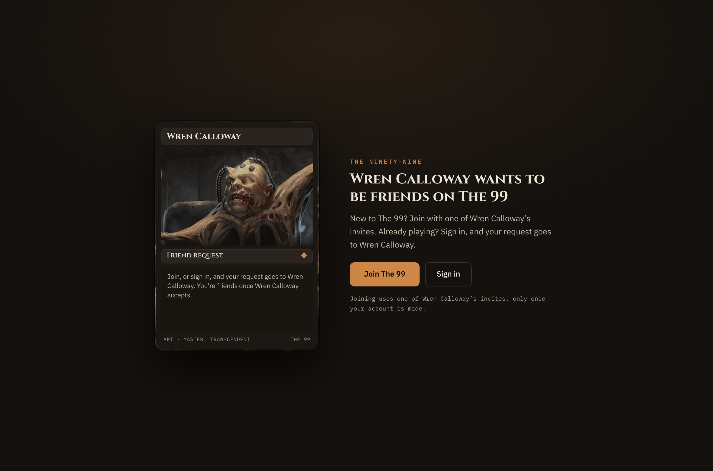
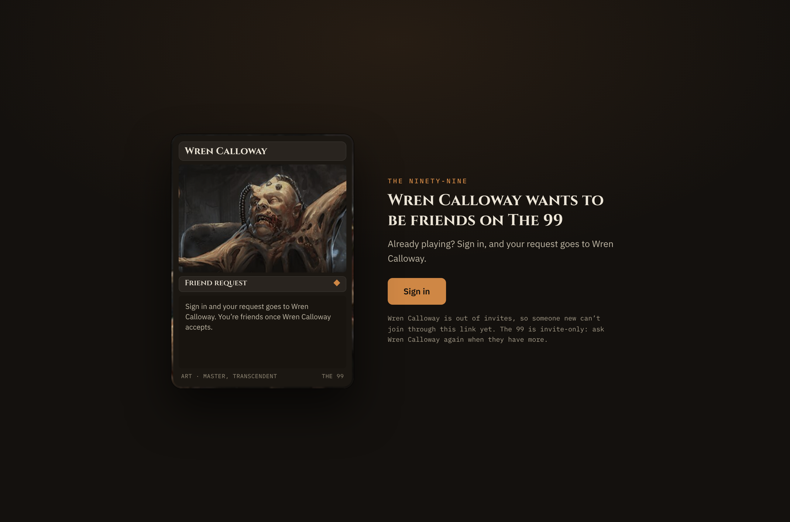

S · Opening a friend link · signed out · the public page, no shell
The shipped signed-out page, its card face up on the owner (Q2). Join The 99 opens the shipped newcomer flow (email, six-digit code, sign-up) on the owner’s invite, unchanged; Sign in returns here signed in, which sends the request (L1). Out of invites, Join goes and the fine line says why.
S1 · 390 · invites left

Joining uses one of Wren Calloway’s invites, only once your account is made.
S2 · 390 · out of invites

Sign in leads alone. Wren Calloway is out of invites, so someone new can’t join through this link yet. The 99 is invite-only: ask Wren Calloway again when they have more.
S3 · 390 · the newcomer lands

After sign-up, Chris lands on Friends with the shipped receipt band: Your friend request went to Wren Calloway. (Q1). Wren answers it in Waiting on you.
S1 · 1300 (half size)

The desktop kicker is the landing’s own mark, The Ninety-Nine, as shipped.
S2 · 1300 (half size)
